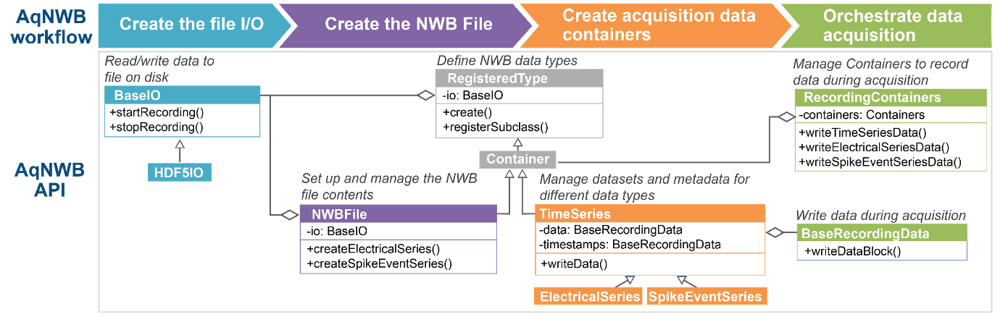

Overview of a recording workflow
For users wanting to integrate NWB with a particular data acquisition software, here we outline the steps for a single recording from file creation to saving.
- Create the I/O object (e.g,. HDF5IO) used for writing data to the file on disk.
- Create the NWBFile object which represents the NWB file and provides convenience functions for creating NWB file contents.
- Create the recording metadata stored in /general in NWB, e.g., the
ElectrodesTable object used for saving electrodes information.
- Create the RegisteredType objects (e.g., ElectricalSeries) used for recording.
- Upon creation, the RegisteredType objects are automatically registered with the RecordingObjects object provided by the I/O object for easy access and to facilitate management of the recording process.
- Start the recording.
- Write data.
- Stop the recording and close the NWBFile.
Below, we walk through these steps in more detail.

Overview of the workflow and design of AqNWB.
1. Create the I/O object
First, create an I/O object (e.g., HDF5IO) used for writing data to the file. AqNWB provides the convenience method, createIO to create this object using one of the supported backends. For more fine-grained control of different backend parameters, you can create your own std::shared_ptr using any of the derived BaseIO classes.
std::shared_ptr<BaseIO> io =
createIO(
"HDF5", path);
io->open();
2. Create the NWBFile
Next, constructs the NWBFile object, using the I/O object as an input. Then, initialize the object to create the basic file structure of the NWBFile.
- Note
- In AqNWB neurodata_types in NWB are represented by subclasses of RegisteredType. All RegisteredType objects (e.g., a TimeSeries) are constructed via a create factory method that requires the path in the file and the io as input.
3. Create the recording metadata
Create the extracellular recording metadata
Next, construct the ElectrodesTable object, using the recordingArrays as an input. Note that in many cases, you will be recording from all electrodes detected by the device and this recordingArrays structure will be the same as is used to create the ElectricalSeries. However in some cases (e.g. when using Neuropixels or multiple probes), you may be recording from a subset of all available electrodes as part of a single ElectricalSeries. In this case, you should create the ElectrodesTable with all electrodes detected by the acquisition system, not just those being actively recorded from. This approach is critical for mapping information about which ElectricalSeries were recorded from which electrodes.
auto elecTable = nwbfile->createElectrodesTable(mockRecordingArrays);
4. Create datasets and add to RecordingObjects
Next, create the different data types (e.g. ElectricalSeries or other TimeSeries) that you would like to write data into. After initialization, these objects are added automatically to the RecordingObjects instance owned by the I/O object so that it can manage access and data writing during the recording process. Once added, ownership of the RegisteredType is transferred to the RecordingObjects object, so that we can access it again via its index. New containers will always be appended to the end of the private member RecordingObjects::m_recording_objects object.
std::vector<SizeType> containerIndexes = {};
nwbfile->createElectricalSeries(mockRecordingArrays,
mockChannelNames,
BaseDataType::I16,
containerIndexes);
We can check the contents of our RecordingObjects to confirm:
auto recordingObjects = io->getRecordingObjects();
std::cout << recordingObjects->toString() << std::endl;
Output:
RecordingObjects contents:
Index = 0; Type = core::NWBFile; Path = /;
Index = 1; Type = hdmf-common::ElementIdentifiers; Path = /general/extracellular_ephys/electrodes/id;
Index = 2; Type = hdmf-common::VectorData; Path = /general/extracellular_ephys/electrodes/group_name;
Index = 3; Type = hdmf-common::VectorData; Path = /general/extracellular_ephys/electrodes/location;
Index = 4; Type = core::DynamicTable; Path = /general/extracellular_ephys/electrodes;
Index = 5; Type = core::Device; Path = /general/devices/array0;
Index = 6; Type = core::ElectrodeGroup; Path = /general/extracellular_ephys/array0;
Index = 7; Type = core::Device; Path = /general/devices/array1;
Index = 8; Type = core::ElectrodeGroup; Path = /general/extracellular_ephys/array1;
Index = 9; Type = hdmf-common::VectorData; Path = /general/extracellular_ephys/electrodes/group;
Index = 10; Type = core::ElectricalSeries; Path = /acquisition/esdata0;
Index = 11; Type = core::ElectricalSeries; Path = /acquisition/esdata1;
- Note
- Registration with the RecordingObjects of the I/O occurs when a RegisteredType is being created via the static RegisteredType::create factory methods.
5. Start the recording.
Then, start the recording process with a call to the startRecording function of the I/O object.
Status startRecordingStatus = io->startRecording();
- Note
- When using HDF5IO for writing to HDF5, calling startRecording will by default enable SWMR mode to ensure file integrity and support concurrent read. As a result, no additional datasets or groups can be added to the file once a recording has been started unless the file is closed and reopened.
- Note
- To ensure that all NWB metadata is consistent when we start the recording process, startRecording also calls RecordingObjects::finalize to finalize all our RegisteredType objects.
6. Write data.
During the recording process, use the RecordingObjects as an interface to access the various Container object and corresponding datasets and write blocks of data to the file. Calling flush() on the I/O object at any time will ensure the data is moved to disk.
containerIndexes[i],
channel,
dataShape,
positionOffset,
intBuffer.get(),
timestampsBuffer.data());
io->flush();
- Note
- We should always reuse the existing objects that are cached in RecordingObjects. Calling for example ElectricalSeries::create("/acquisition/esdata0", io) multiple times for the same I/O and path will result in the creation and registration of effectively duplicate objects that attempt to access (and potentially modify) the same objects in the NWB file, hence, leading to potentially unintended interactions, e.g., one object overwriting changes of the other.
7. Stop the recording and finalize the file.
When the recording process is finished, call stopRecording from the I/O object to flush any data and close the file.
io->stopRecording();
io->close();
- Note
- To ensure that all NWB metadata is consistent after we complete the recording process, stopRecording also calls RecordingObjects::finalize again.
- Note
- If we do not use the startRecording and stopRecording functions to create an NWBFile then we need to make sure to manually call RecordingObjects::finalize before we close the I/O to make sure file contents are finalized correctly.
Advanced: Recording individual datasets
In the above workflow we used utility methods, e.g., writeTimeseriesData to ensure data is being recorded in a consistent manner such that data and timestamps are both updated at the same time to ensure the recording is consistent. For finer-grained control to record into individual datasets directly, we can use the corresponding record methods, e.g., TimeSeries.recordData to retrieve the BaseRecordingData object for writing data to the datasets. The BaseRecordingData objects for all datasets that belong to a recording object are cached by the RegisteredType base class to ensure that the current state of the recording process (e.g., the position) are stored. With this we can manually write individual data blocks ourselves while ensuring continuation of the recording process:
auto container0 = recordingObjects->getRecordingObject(containerIndexes[0]);
auto electricalSeries0 =
std::dynamic_pointer_cast<NWB::ElectricalSeries>(container0);
auto recordingData0 = electricalSeries0->recordData();
auto timestampsData0 = electricalSeries0->recordTimestamps();
recordingData0->writeDataBlock({bufferSize, 1},
{samplesRecorded, 0},
BaseDataType::I16,
dataBuffer.data());
Status writeTimestampsStatus =
timestampsData0->writeDataBlock({bufferSize},
{samplesRecorded},
BaseDataType::F64,
timestampsBuffer.data());
Resetting the recording position
If we want to clear the recording cache, we can do so by calling electricalSeries0->clearRecordingDataCache(). In this case the cached BaseRecordingData object will be deleted, such that the next time we request it, a new BaseRecordingData object will be constructed that will then start again writing values from the beginning of the dataset. If we want to clear the BaseRecordingData object for a single datasets, we can set reset=true when retrieving the BaseRecordingData object (e.g., via auto dataRecorder = electricalSeries0->recordData(true))